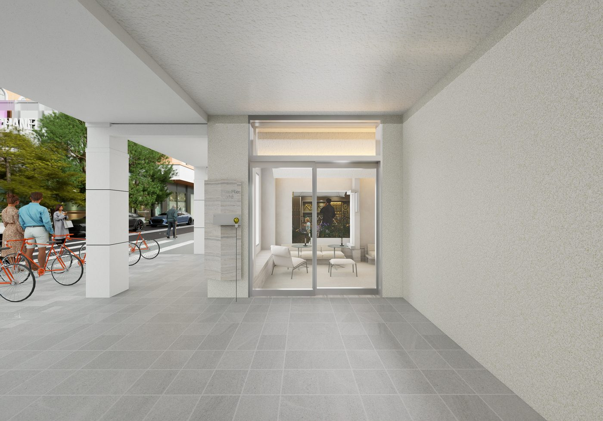
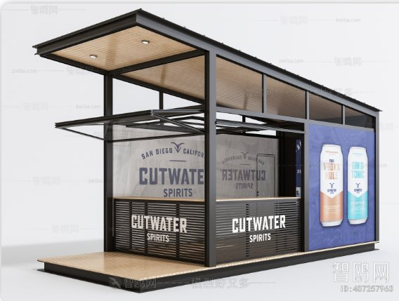
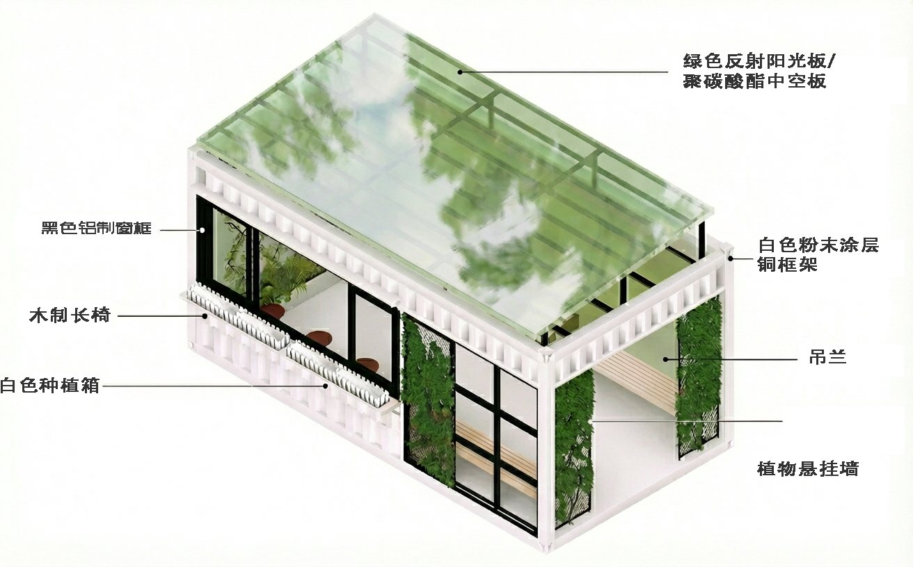
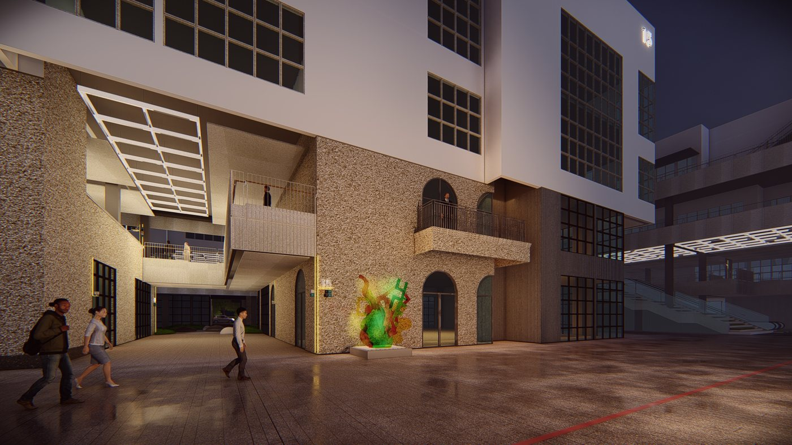
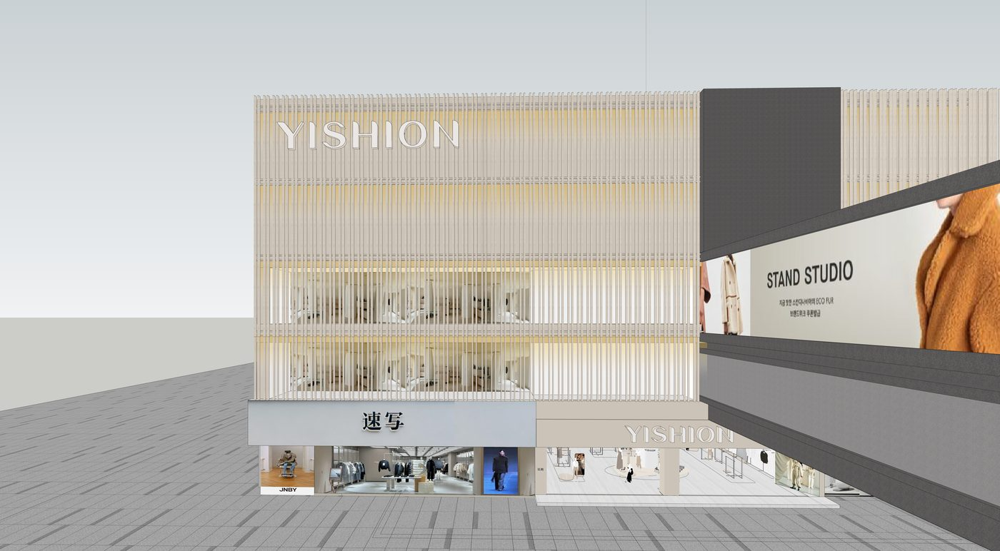
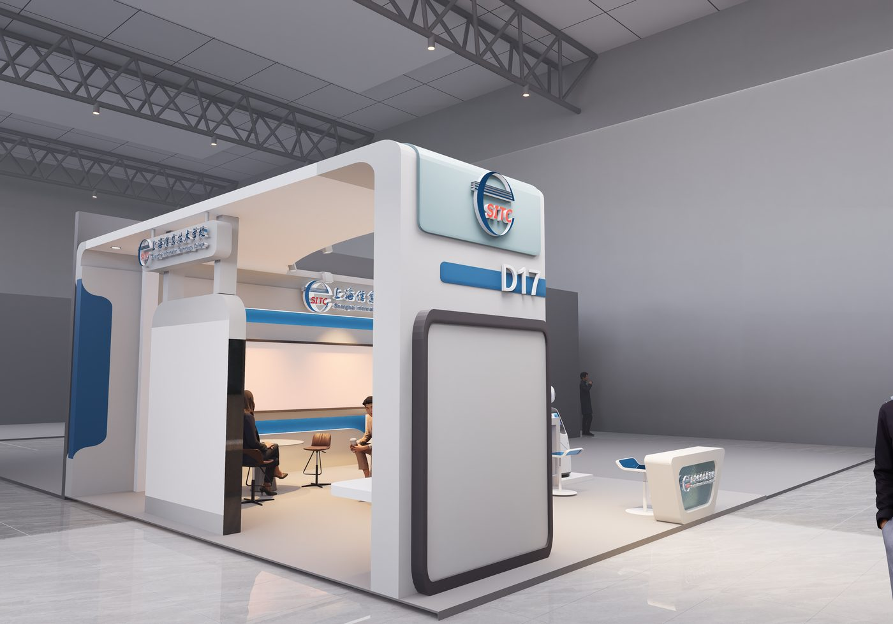
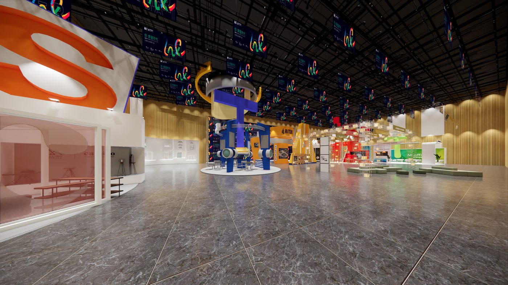
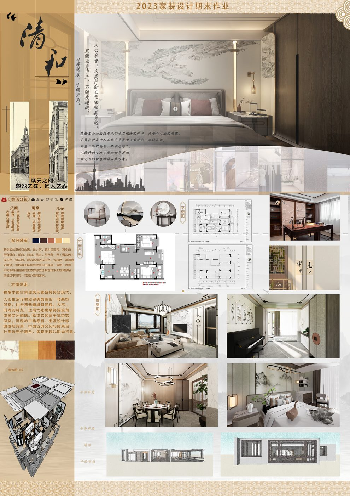
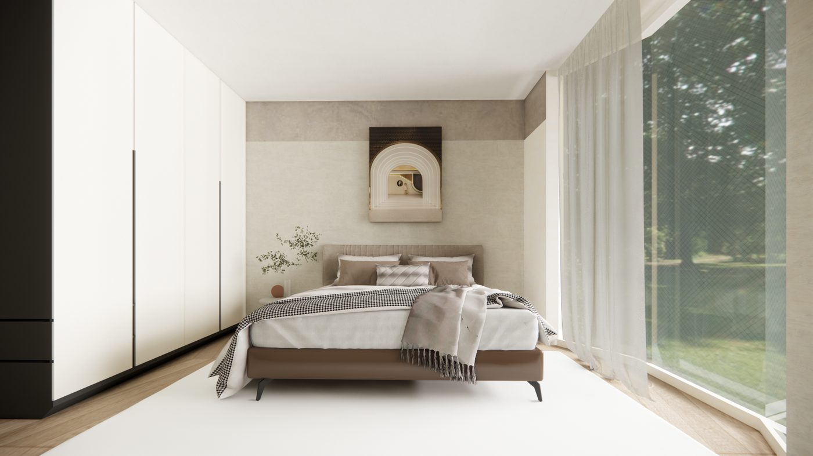
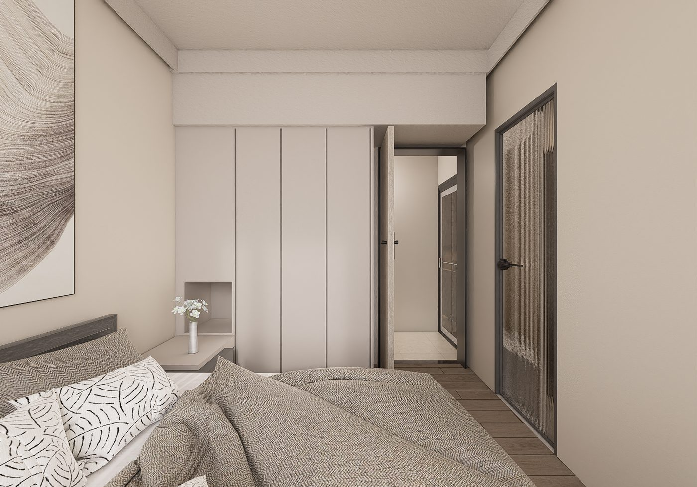

Portfolio for Job Application
以多类型空间项目为基础，建立从调研到表达的完整设计参与能力。
张崇源 · 工装商业 / 展陈展厅 / 景观 / 文旅 / 公共艺术 / 住宅空间
面向方案助理与空间设计相关岗位，重点展示我在商业空间、展陈空间、景观节点、公共设施与住宅项目中的参与经验。 当前网站保留最适合投递展示的精选项目，以便在短时间内快速呈现项目类型、个人参与内容、软件能力与落地经验。
可参与方向
商业空间
展陈展厅
景观节点
文旅更新
公共艺术
住宅空间
常用工具
SketchUp
D5 / Enscape
CAD
PS / AI / ID
ComfyUI
OpenCloud
Design Practice
围绕实际项目与课程课题，形成多类型空间中的调研、推演、建模和表达经验。
当前网站采用“精选投递版”结构，只保留最能代表能力的模块与项目。内容从原有整理库中收束为六个方向，避免信息过载， 让浏览者能够在较短时间内看清项目类型、空间尺度、个人参与内容和表达方式。
在这些项目中，我主要参与前期资料整理、案例研究、概念推演、空间建模、效果图表达、CAD 基础图纸深化、 文本排版与资料整理，并将 PS、AI、ID 与 AI 辅助工具结合到方案表达流程中，提升图面效率和叙事清晰度。

工装商业
门店、零售、商业界面
展陈展厅
展厅叙事、动线、活动场景

景观设计
场地节点、社区体验

文旅更新
场地更新、文化叙事

公共艺术
装置、设施、互动体验
住宅空间
生活方式、材料氛围
Selected Projects
精选项目模块
以当前素材完整度与投递适配度为标准，保留 15 个重点项目。支持按模块筛选，快速查看与你关注岗位更匹配的项目方向。
工装商业 / 已落地 / 主推项目
SO STUDIO｜RAC Coffee 门店空间
以门店入口、室内座区、吧台和材料氛围为核心，呈现品牌零售空间中从视觉界面到顾客停留体验的整体表达。
- 参与内容：空间建模、效果图表达、界面整理
- 使用工具：SketchUp / D5 / PS
- 项目亮点：适合作为商业零售与小型餐饮空间代表项目

工装商业 / 已落地 / 主推项目
以纯成都春熙路店｜品牌零售空间
围绕品牌视觉、商业界面和店内展示展开，体现对门店空间尺度、品牌落位与展示组织的理解。
- 参与内容：参考整理、空间表达、展示界面梳理
- 使用工具：SketchUp / Enscape / PS
- 项目亮点：适合强化商业门店类岗位匹配度

工装商业 / 概念更新 / 叙事型项目
亚新生活广场更新计划｜传统文化与商业更新
以传统文化与现代商业空间结合为主线，强调场地更新、空间再组织和商业氛围重塑。
- 参与内容：概念推演、空间关系整理、图面表达
- 使用工具：SketchUp / PS / AI / ID
- 项目亮点：补充商业改造与毕业设计叙事能力
{kind=link}
展陈展厅 / 已落地 / 主推项目
信校职业教育展｜教育展厅与展位空间
从功能分区、观展动线到互动区域组织，完整体现教育展厅中展示内容与空间节奏的协调方式。
- 参与内容：展区梳理、空间建模、施工表达配合
- 使用工具：SketchUp / CAD / D5
- 项目亮点：适合展示展厅类项目中的综合配合能力
展陈展厅 / 已落地 / 主推项目
邦德校史馆｜校史馆展陈空间
围绕前厅、中厅、后厅的参观节奏组织展陈内容，注重空间叙事、视觉层级和氛围塑造。
- 参与内容：空间表达、叙事梳理、图面深化
- 使用工具：SketchUp / D5 / ID
- 项目亮点：强化展陈逻辑与空间叙事表达

展陈展厅 / 已落地 / 活动场景
创业投资大会｜活动展陈空间
体现大型活动中背景界面、会场氛围和传播场景的组织方式，补充展示活动类空间经验。
- 参与内容：视觉界面整理、活动空间表达
- 使用工具：PS / AI / SketchUp
- 项目亮点：适合补充会议活动与传播场景经验
景观设计 / 已落地 / 主推项目
吸烟区场地与设施规划｜公共设施节点设计
围绕公共设施、节点尺度、材料与场地关系展开，兼具汇报文本、关键效果图与模型文件支撑。
- 参与内容：场地梳理、节点推演、效果与文本表达
- 使用工具：SketchUp / CAD / PS / AI
- 项目亮点：兼顾节点设计与公共使用逻辑
景观设计 / 已落地 / 社区场景
汇旺社区儿童乐园｜社区儿童活动空间
聚焦活动场地、游乐节点与社区公共体验，适合体现社区尺度与使用友好性的景观思考。
- 参与内容：节点整理、模型表达、图面排版
- 使用工具：SketchUp / D5 / PS
- 项目亮点：补充儿童活动场景与社区景观能力
景观设计 / 研究型 / 生态节点
雨水花园｜海绵城市与景观节点设计
以生态景观与雨洪管理为切入点，补充场地策略、功能组织与生态表达能力。
- 参与内容：概念研究、节点表达、图面整理
- 使用工具：PS / AI / CAD
- 项目亮点：扩展生态景观与策略型思考维度

文旅设计 / 社区更新 / 叙事补充
李园一村｜文旅与社区更新设计
承接场地文化、社区生活与公共空间体验之间的关系，作为文旅叙事方向的补充项目保留。
- 参与内容：案例研究、概念推演、文本表达
- 使用工具：PS / ID / AI
- 项目亮点：强化文化叙事与社区更新表达
公共艺术 / 已落地 / 设施装置
家具与设施设计｜公共设施与装置设计
围绕设施尺度、材料构造、公众互动和城市界面关系，呈现公共艺术介入空间的实践方向。
- 参与内容：概念推演、节点表达、材料整理
- 使用工具：SketchUp / PS / AI
- 项目亮点：补充装置思维与设施构造表达
住宅空间 / 主推项目 / 风格表达
静好｜中古现代主义寓所
以中古现代主义氛围为核心，体现住宅空间中的材质搭配、尺度控制和生活方式塑造能力。
- 参与内容：空间建模、材质氛围表达、版式整理
- 使用工具：SketchUp / D5 / PS
- 项目亮点：家装方向中完成度和审美表现较强

住宅空间 / 已落地 / 施工图经验
临潼苑29号402室｜家装施工图设计
以施工图与项目参与说明为主，作为已落地住宅项目，强调配合经验与实施维度。
- 参与内容：图纸深化、材料整理、项目配合
- 使用工具：CAD / PS
- 项目亮点：补充住宅项目中的落地和图纸能力

住宅空间 / 已落地 / 经验补充
春申路2728弄78号｜住宅空间设计
网页中以项目经历与参与职能为主，弱化不可公开的细节展示，保留实际住宅项目经验说明。
- 参与内容：方案整理、图面处理、落地配合
- 使用工具：CAD / PS / AI
- 项目亮点：补充住宅方向的真实项目履历
住宅空间 / 已落地 / 高端居住
瑞安·翠湖滨江｜住宅空间设计
作为家装方向的高优先级补充项目，重点保留空间类型和项目参与说明，适配岗位沟通需求。
- 参与内容：方案辅助、图面整理、风格表达配合
- 使用工具：SketchUp / PS
- 项目亮点：扩展高端居住空间项目经历
Design Capabilities
能力结构
以空间方案表达为核心，同时覆盖前期调研、建模渲染、图纸深化和 AI 辅助流程。
调研与概念整理
能够整理前期资料、参考案例与场地信息，为后续方案方向和叙事结构建立基础。
空间建模与效果表达
使用 SketchUp、D5、Enscape 完成空间模型、材质灯光和主要效果图表达。
图纸深化与版式排版
具备 CAD 基础图纸深化、PS / AI / ID 图面处理、方案文本排版和资料归档能力。
AI 辅助设计表达
使用 ComfyUI、OpenCloud 等工具完成概念参考、视觉生成与表达效率提升。
Portfolio Files
文件入口
这一版站点保留最常用的投递成品文件，方便在网页浏览后继续查看完整 PDF、个人简历和总览长图。